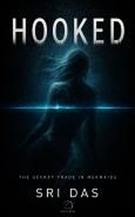
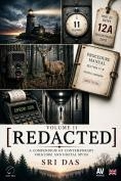
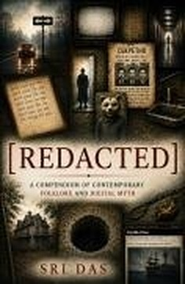
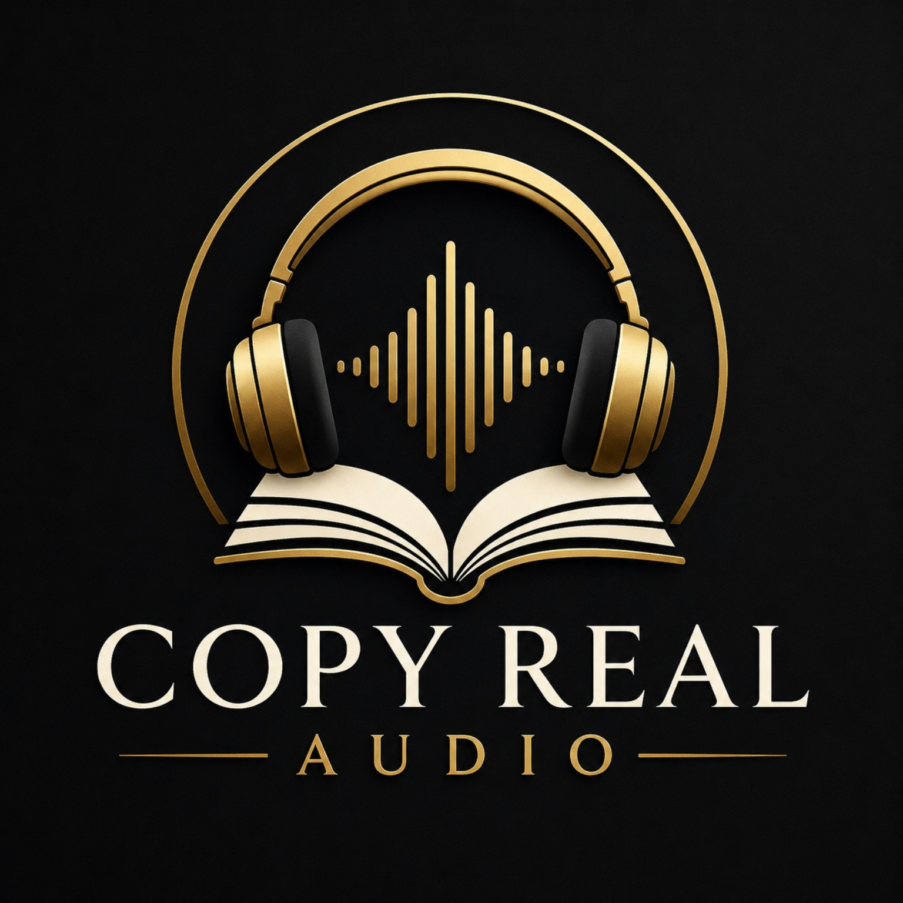

BOOKS THAT
SHOULD EXIST.
Original stories. Restored classics. Illustrated editions. Audiobooks produced through Copy Real Audio.




REAL BOOKS
Featured Editions
These are existing Copy Real covers recovered from the publishing archive and the previous ChasBurns.com build.
Sex with Aliens

It's Only Me
Hooked

Uncanny Valley

[REDACTED] — Volume I
The War of the Worlds

What Is Happening Now?

Nineteen Eighty-Four

Stories, brought to life.
Copy Real Audio is the audiobook division of Copy Real. New productions carry the Copy Real Audio identity; historic AV-branded covers remain visible where they are the genuine published artwork.

Books
Original fiction, illustrated editions, handbooks, children’s books and classics.
Browse 41 recovered covers →Copy Real Audio
The audiobook division of Copy Real: Pure Narration and Cinematic Editions.
Explore audio →Series
Sex With…, Trion, [REDACTED], Actors Companion and connected publishing lines.
Explore series →The house identity stays quiet. The books do not.
Copy Real uses one restrained publishing framework so literary fiction, horror, speculative work, children’s publishing, classics and audio can keep their own visual identities without looking unrelated.
About Copy Real